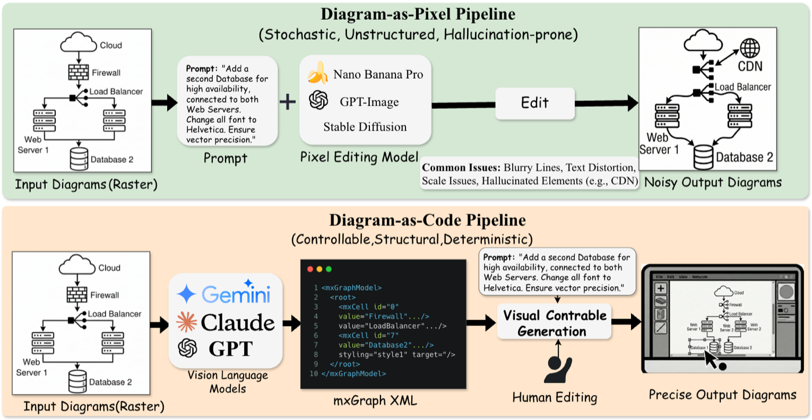

Vision-to-XML Generation
Given a raster diagram image and structured caption, a model generates valid mxGraph XML that can render back to a faithful diagram.
A synthetic data and evaluation benchmark for converting diagram images into editable
mxGraph XML, then measuring whether models can generate, render, and edit
structured diagrams with controllable fidelity.


mxGraph code with nodes, edges, text, layout, and style.
<mxGraphModel>
<root>
<mxCell id="agent" value="Pipeline Orchestration Agents" style="rounded=1;fillColor=#6d28d9"/>
<mxCell id="data_lake" value="Data Lake" vertex="1" parent="1"/>
<mxCell id="edge_1" edge="1" source="data_lake" target="agent"/>
</root>
</mxGraphModel>
Problem
VCG-Bench formalizes the diagram-as-code setting: convert images into symbolic
mxGraph XML so diagrams can be edited deterministically instead of regenerated as pixels.

Raster editing often introduces blurred lines, distorted text, scale drift, misplaced connectors, and hallucinated elements.
Structured XML exposes nodes, edges, styles, and geometry, making local edits cheaper, auditable, and repeatable.
VCG-Bench separates the hard vision-to-structure step from the code-to-code editing step, then evaluates both.
Framework
VCG-Bench combines two complementary tasks around Draw.io / diagrams.net diagrams,
both grounded in executable mxGraph XML.

Given a raster diagram image and structured caption, a model generates valid mxGraph XML that can render back to a faithful diagram.
Given existing XML, rendered context, and natural-language instructions, a model predicts localized XML patches for deterministic editing.
Synthetic Data
The pipeline collects diverse diagrams, synthesizes structured descriptions and XML, renders candidates, filters with parser and visual checks, and retains high-quality examples.
mxGraph XML, then render outputs for automatic validation.Benchmark Findings
The benchmark reports executability, visual fidelity, and semantic compliance through ESR, SCS, CodeXQA, SigLIP2, and XDRFR.
Gemini-3-Pro leads closed-source models on Vision-to-XML generation, while open-source models often fail primarily on executability.
Qwen3-VL-8B and Qwen3-VL-32B reach zero ESR in Task 1, highlighting the missing Draw.io domain knowledge.
Once XML is available, constrained patch editing becomes reliable, with XDRFR distinguishing instruction-following quality.
Skill + Codex Cases
These three examples are reconstructed with the drawio-reconstruction skill using Codex GPT-5.5 xhigh.
Each right-hand image is the exported PNG from the reconstructed Draw.io file.


Resources
VCG-Bench code is released under MIT. The dataset release is hosted on Hugging Face under CC BY 4.0.
Read the ICML 2026 paper and full benchmark definition.
CodeGeneration, rendering, evaluation, notebooks, and examples.
DatasetPublic Task 1 parquet release with images, descriptions, and XML.
SkillCodex skill and scripts for reconstructing diagrams into Draw.io files.
@misc{su2026vcgbenchunifiedvisualcentricbenchmark,
title={VCG-Bench: Towards A Unified Visual-Centric Benchmark for Structured Generation and Editing},
author={Xiaoyan Su and Peijie Dong and Zhenheng Tang and Song Tang and Yuyao Zhai and Kaitao Lin and Liang Chen and Gai Yuhang and Yuyu Luo and Qiang Wang and Xiaowen Chu},
year={2026},
eprint={2605.15677},
archivePrefix={arXiv},
primaryClass={cs.CL},
url={https://arxiv.org/abs/2605.15677},
}